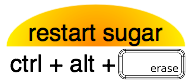
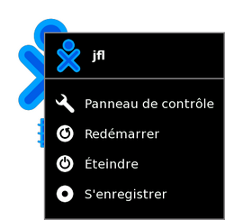
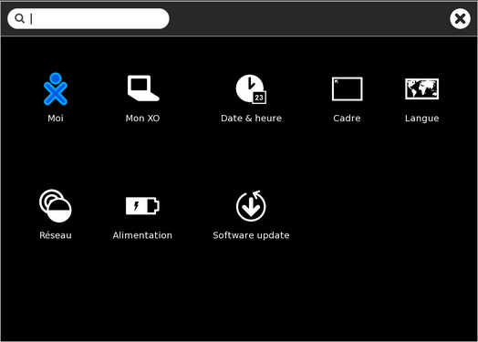
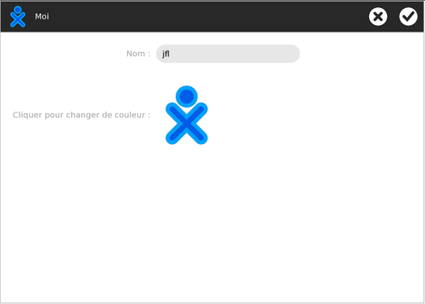
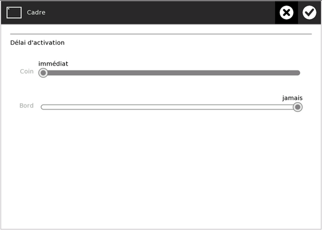
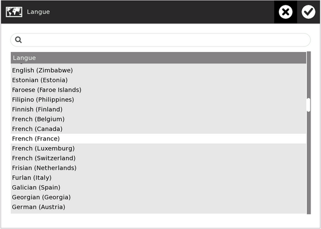
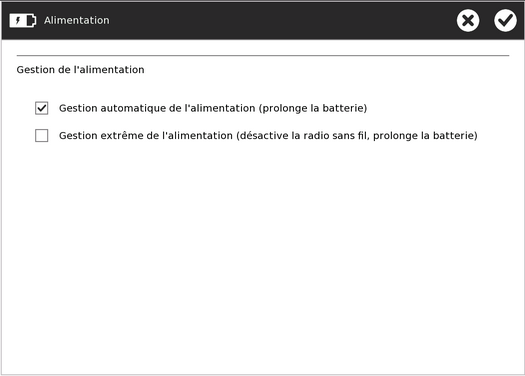
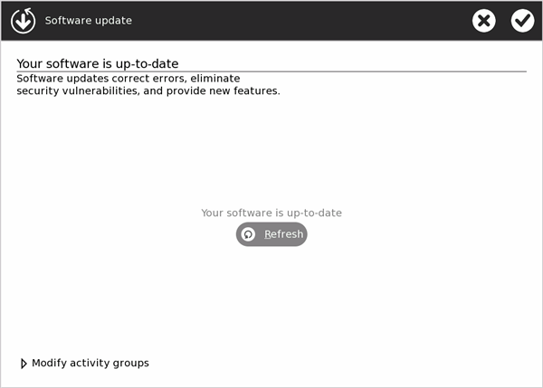
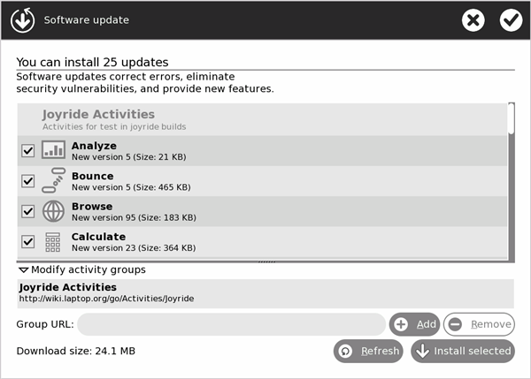

| Le Journal | Index | Qu'est-ce qu'une Activité ? |
Vous pouvez personnaliser Sugar pour l'adapter à vos besoins en modifiant différentes options comme:
Vous pouvez configurer votre système dans le panneau de contrôle Sugar.
Note: La plupart des modifications décrites dans ce chapitre demanderont le redémarrage de Sugar (ctrl+alt+erase) pour prendre effet.

Lorsque vous glissez votre curseur sur l'icône XO qui se trouve au centre de la Vue Accueil, un menu apparaît. Sélectionnez Panneau de contrôle.

Le panneau principal comporte huit catégories d'options.

Vous pouvez utiliser le champ texte qui se trouve en haut de la fenêtre pour chercher les options disponibles. Celles qui n'auront pas été trouvées par la recherche textuelle s'obscurciront.
Pour accepter les modifications faites sur les panneaux de catégorie, cliquez sur le bouton "OK" dans le coin supérieur droit. Cliquez sur le bouton "Cancel" pour annuler les modifications et revenir au panneau principal.
Vous pouvez quitter le panneau de contrôle en cliquant sur le "X" dans le coin supérieur droit du panneau.
Note: Si vous faites des modifications dans ce panneau, vous devrez redémarrer Sugar (ctrl+alt+erase) pour qu'elles prennent effet. Attention: Vous pourriez perdre tout le travail en cours.

C'est dans cette case que vous pouvez modifier votre nom d'utilisateur. Celui-ci apparaîtra lorsque vous démarrerez Sugar.
Cliquez sur l'icône XO pour parcourir les couleurs proposées. Ces couleurs apparaîtront dans Vue de voisinage, Vue de Groupe, Vue principale, dans votre Cadre, ainsi que lorsque vous communiquerez avec d'autres utilisateurs Sugar. Il existe presque 400 possibilités de couleurs qui consistent en une combinaison des six couleurs de base (rouge, orange, jaune, vert, bleu, violet) utilisées comme couleurs de tracé et de remplissage, ainsi que trois nuances (légère, moyenne, foncée).
Allez sur http://wiki.laptop.org/images/0/05/Buddy-Icon-Color-Matrix.pdf pour une vue d'ensemble des combinaisons de couleurs disponibles.

C'est ici que vous trouverez le numéro de série de votre portable XO, comme c'est aussi le cas pour certains autres ordinateurs. Vous en aurez besoin lors d'une réparation ou lors d'une demande de clé de développement.
C'est aussi ici que vous pourrez voir quelles sont les versions du logiciel, de Sugar et du firmware installées sur le système.
Note: Si vous effectuez des modifications sur ce panneau, vous devrez redémarrer Sugar (ctrl+alt+erase) pour qu'elles prennent effet. Attention: Vous pourriez perdre tout le travail en cours.
Vous pouvez choisir votre fuseau horaire de plusieurs façons:
Note: Si vous effectuez des modifications sur ce panneau, vous devrez redémarrer Sugar (ctrl+alt+erase) pour qu'elles prennent effet. Attention: Vous pourriez perdre tout le travail en cours.

Vous pouvez modifier le délai d'activation du cadre. Vous pouvez régler le délai séparément pour les coins ou les bords.
Dans la configuration par défaut, le cadre apparaît instantanément lorsque le pointeur est amené sur un des coins ou un des bords de l'écran.
Note: Si vous effectuez des modifications sur ce panneau, vous devrez redémarrer Sugar (ctrl+alt+erase) pour qu'elles prennent effet. Attention: Vous pourriez perdre tout le travail en cours.
Vous pouvez choisir la langue par défaut de votre système. Il est possible néanmoins que, même si votre langue apparaît dans la liste, qu'elle puisse être indisponible ou incomplète.

Cette case à cocher vous permet d'allumer ou d'éteindre le fonctionnement du réseau sans fil. Par exemple, si vous utilisez le système lors d'un trajet en avion, vous devez éteindre le réseau sans fil.
Note: Si vous effectuez des modifications sur ce panneau, vous devrez redémarrer Sugar (ctrl+alt+erase) pour qu'elles prennent effet. Attention: Vous pourriez perdre tout le travail en cours.
Ici vous pouvez entrer le nom d'un serveur de collaboration basé sur jabber. Ceci vous permet de partager des Activités avec d'autres personnes connectées au même serveur, même si elles se trouvent à l'autre bout du monde.
Notez que certains clubs et universités locaux utilisent leur propre serveur de collaboration; cela peut valoir la peine de le vérifier auprès de wiki.laptop.org.
Vous pouvez configurer les fonctions d'économie d'énergie de de votre système.
Notez que ces réglages restent en fonction, même lorsque l'ordinateur est branché sur une prise électrique.

Cliquez sur les cases à cocher pour activer ou désactiver les options suivantes.
Ce mode baisse la brillance de l'écran et éteint la CPU si ni le pavé tactile ni le clavier n'ont été touchés pendant 1 minutes et qu'aucune Activité ne fait une utilisation importante de la CPU.
Activer ce mode éteindra la radio sans fil. Cela augmente fortement la durée de vie de la batterie du sytème. Ce mode éteindra également les deux voyants LED situés à gauche de votre portable. Vous ne pourrez plus voir d'autres réseaux et d'autres XO dans votre Vue de voisinage. Utilisez ce mode pour permettre la durée de vie maximum de la batterie.
Vous pouvez choisir, installer et mettre à jour les Activités de votre système.
Lorsque votre système est connecté à Internet, il recherche la liste de toutes les Activités disponibles.
Si votre système n'est pas connecté, le message suivant apparaît "Ne peut accéder au réseau pour vérifier les mises à jour".
Le panneau montre une liste des nouvelles Activités ou des Activités mises à jour qui sont disponibles. La vue d'ensemble contient également des informations sur la version et la taille de l'Activité. Une Activité est sélectionnée lorsque une coche figure dans la case à cocher.
Cliquez sur Modify activity groups pour avoir accès à d'autres activity groups.

L'affichage du statut vous informera sur le déroulement du téléchargement et de l'installation.
Si toutes vos Activités sont à jour, le message suivant apparaîtra :
| Le Journal | Index | Qu'est-ce qu'une Activité ? |